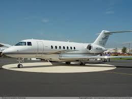

| Bombardier BD-700 Global Express
är en ultra long range affärs- och VIP-höghastighetsjet som också har modifierats för militära operationer. |
|
| Bombardier Challenger 600-serien
är en familj av affärsjetplan designade av Bill Lear och producerade först av Canadair, tills det köptes upp av Bombardier Aerospace under 1986, och sedan av Bombardier. |
|
| Gulfstream
V och G-V SP är affärsjetflygplan tillverkade av General Dynamics' Gulfstream Aerospace i Savannah, Georgia, USA. De används också av den amerikanska militären under beteckningen C-37A. |
|
|  | Hawker 800
är ett mellanstort tvåmotorig affärsflygplan. Det är en utveckling av British Aerospace BAe 125, och monteras av Hawker Beechcraft. |
| Cessna Citation
är ett samlingsnamn på en serie av affärsjet producerade av amerikanska flygplanstillverkaren Cessna Aircraft Company. Namnet är ett samlingsnamn på en flygplansfamilj, vilka genom åren producerats och försetts med dubbelströmsmotorer. Inom de olika familjerna, vilka är sex till antalet, har utveckling och marknadsföring resulterat i ett antal olika varianter, vilket medfört att dess härstamning blivit komplicerad. Militära varianter inkluderar T-47 och UC-35 serien. |
|
| Learjet 85
är den senaste Learjet utvecklingsprogram med flygplanstillverkaren Bombardier Aerospace. Programmet inleddes den 30 oktober 2007 och en mockup av flygplanet avtäcktes i oktober 2008 på NBAA utställning i Orlando. Den Learjet 85 passar mellan medelstora och super medelstora marknadssegmenten. Det blir den första Bombardier Aerospace jet att presentera en sammansatt struktur och blir Learjet första kompositstruktur affärsjet utformats för typ certifiering enligt FAR-25. Planet förväntas ha en hög hastighet kryssning i Mach 0,82 och ett trans räckvidd på upp till 3.000 nautiska miles (5.556 km). |